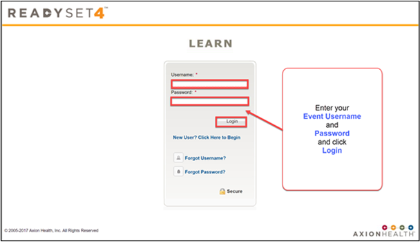
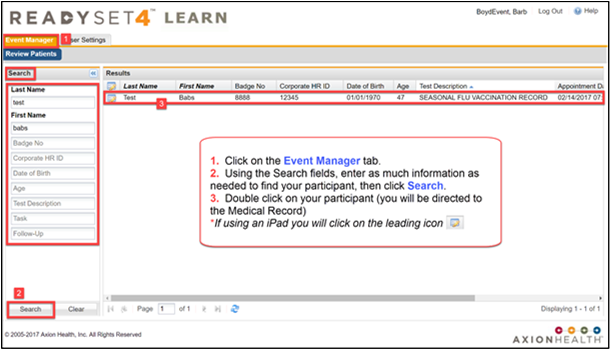
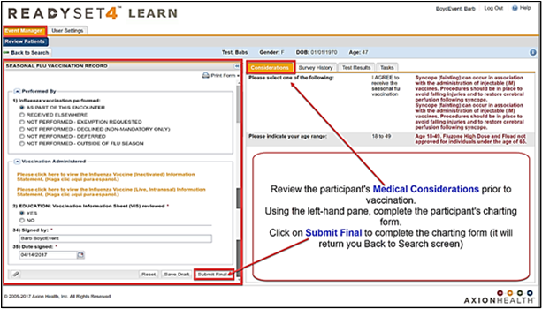
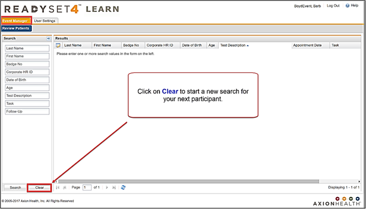

Follow these simple steps to document the administration of flu vaccine to a participant.


To avoid charting on incorrect records, please remember these tips to search for your patient:
By following these guidelines, you should locate the patient and prevent charting errors.

